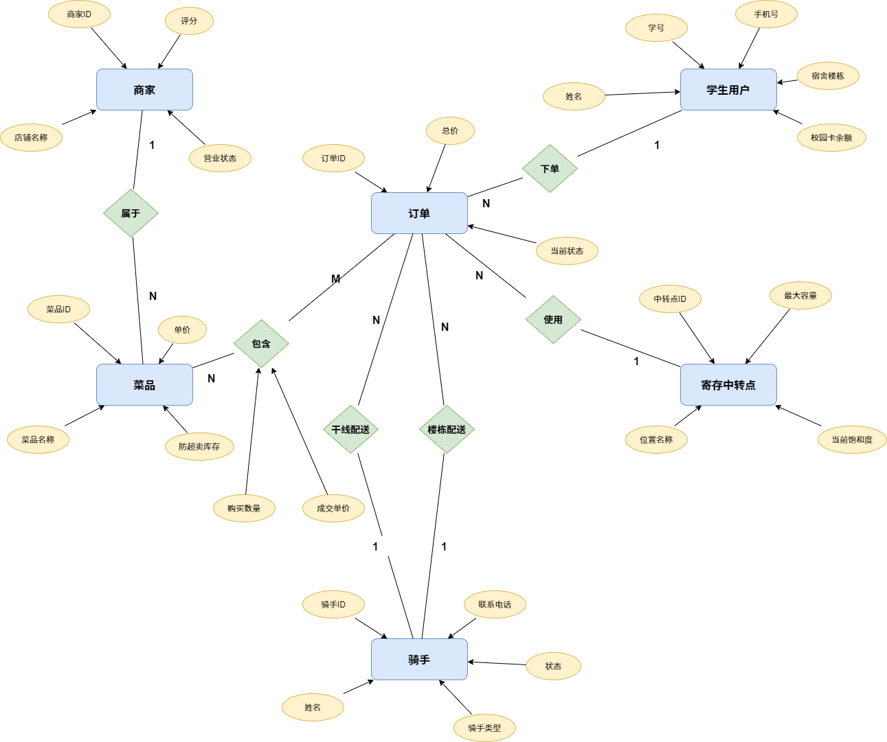
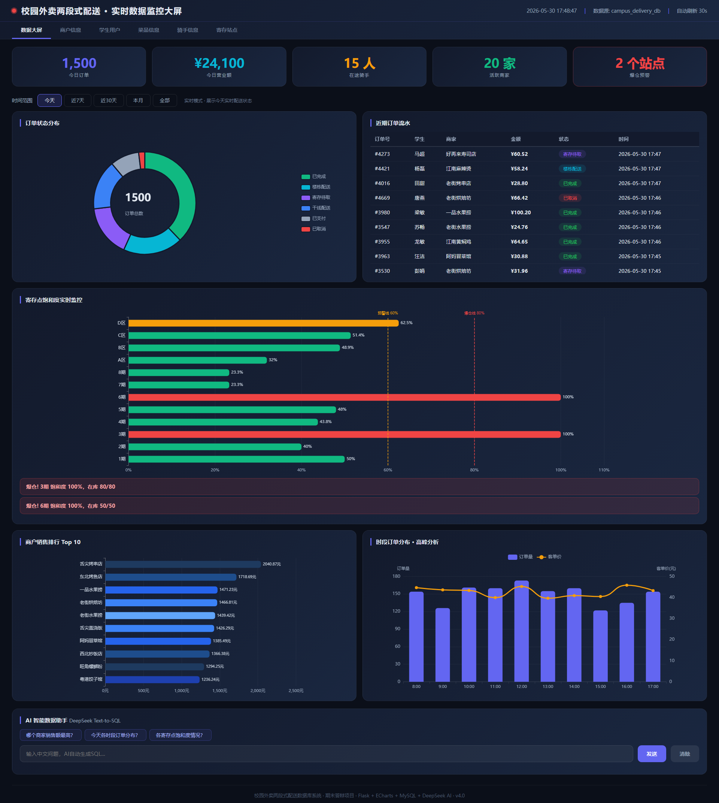
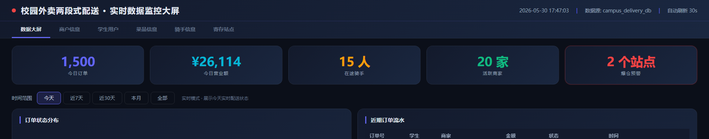
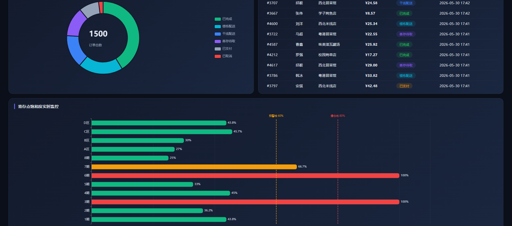
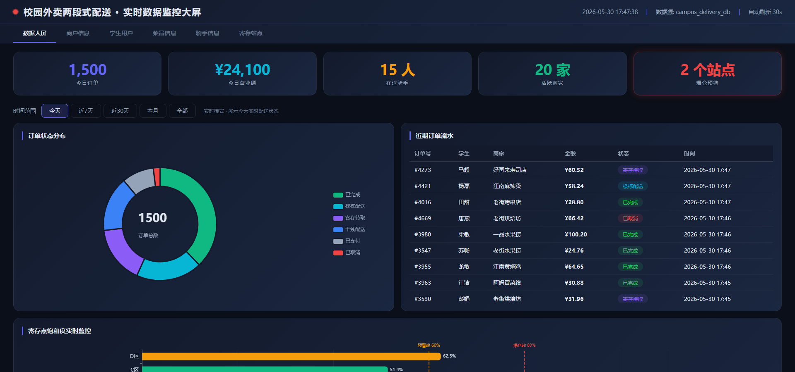
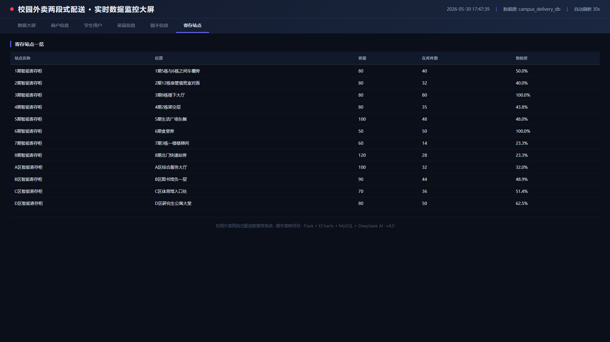
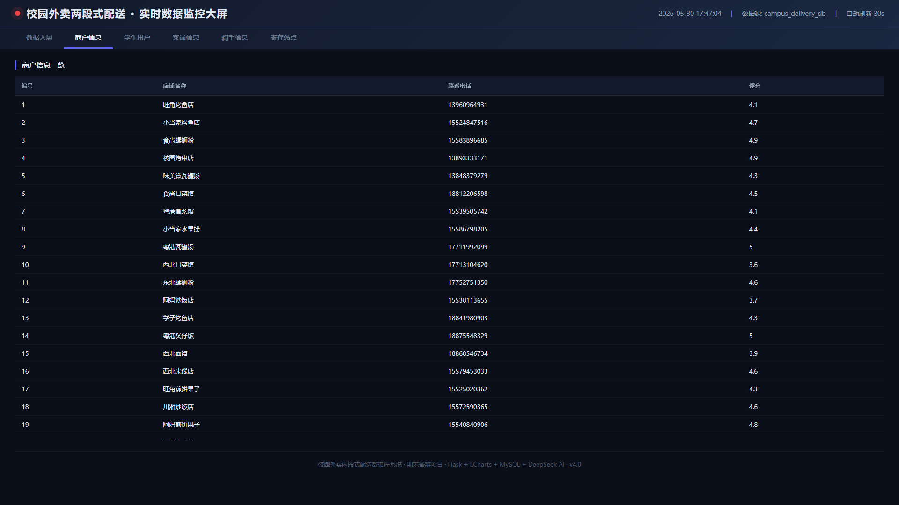
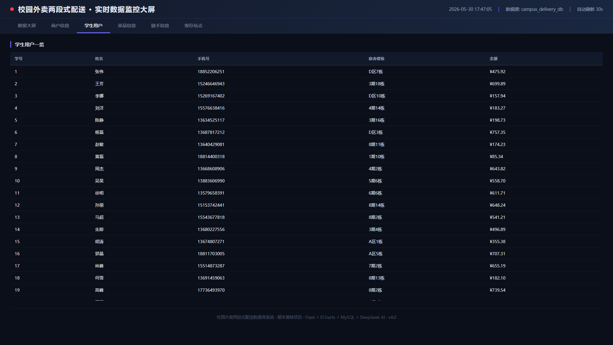
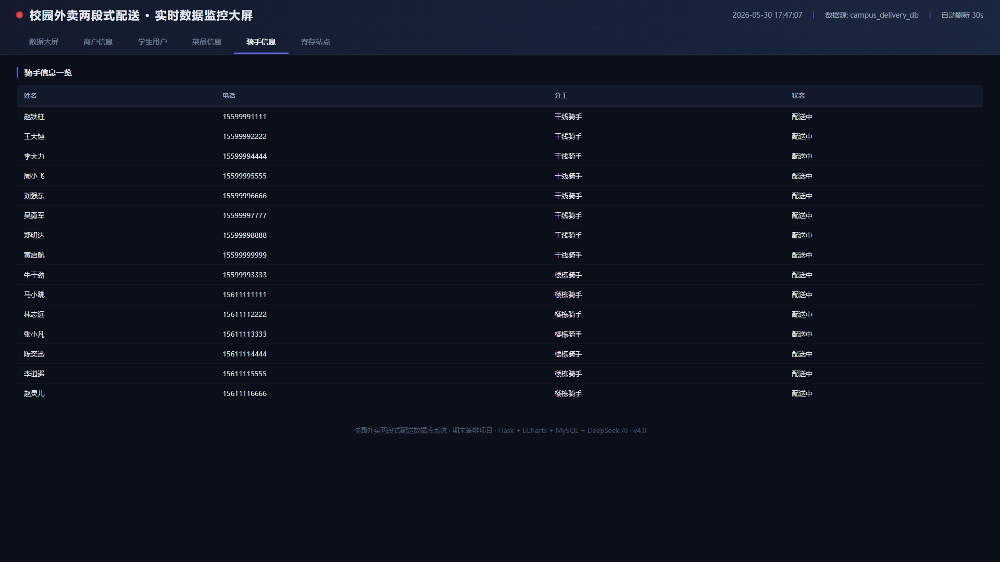
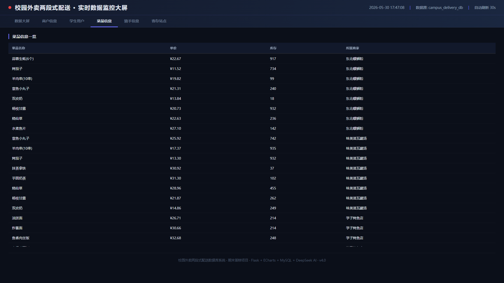

MySQL 8.0 · Flask · ECharts · DeepSeek AI
校园外卖市场 · 传统痛点 · 两段式配送模型
年增长 22.4%
大学生消费主力
高峰期配送压力巨大
[1] 校门禁入 — 校外骑手不能进宿舍区，学生需步行数百米取餐
[2] 高峰拥堵 — 30+ 骑手同时在校门口，场面混乱，时效无法保证
[3] 丢失错拿 — 外卖堆放地上无管理，日均丢失率 3%-5%
将一条配送链拆为两段，在宿舍楼下设置智能寄存柜作为中转枢纽。
核心价值：校外骑手只送到寄存点（不进宿舍区），楼栋骑手负责最后 100 米 — 安全、高效、全链路可追溯。
三层架构 · 技术栈 · ER 图 · 7 张核心表 · 严格 3NF
Flask + ECharts 实时大屏 · 3 个 Tab · 30 秒自动刷新
Python Flask REST API · 4 个存储过程 · AI Text-to-SQL (DeepSeek)
MySQL 8.0 InnoDB · 7 表 4 索引 7 触发器 2 视图 · FOR UPDATE 行级锁
InnoDB · FOR UPDATE 行级锁 · RANK() OVER 窗口函数
REST API · PyMySQL · DeepSeek AI 集成
3 个 Tab · 饼图 + 柱状图 · 30 秒刷新
Text-to-SQL · Schema 注入 · 仅允许 SELECT
Tunnel 公网隧道 · HTTPS · 扫码即看
7 表 3NF · 7 触发器 · ACID 事务 · 12 CHECK

| 表名 | 中文 | 核心约束 |
|---|---|---|
| users | 学生 | balance >= 0 · phone UNIQUE |
| merchants | 商家 | rating 1~5 |
| dishes | 菜品 | stock >= 0 · status 0/1 上下架 |
| pickup_points | 寄存点 | chk_capacity CHECK(current <= capacity) |
| riders | 骑手 | ENUM rider_type + status |
| orders | 订单 | 6 态 ENUM · 双骑手 FK · 3 TIMESTAMP |
| order_items | 明细 | quantity > 0 · FK CASCADE |
寄存中转点表。核心是 chk_capacity ——物理柜子 80 格，数据库绝不允许第 81 个包裹写入。
12 个寄存点 · 容量 50~120 格 · current_packages 由存储过程 +1/-1 维护
CONSTRAINT chk_capacity CHECK (current_packages <= capacity) -- 物理容积硬约束 -- 80 格绝不 81 包
六态状态机 + 双骑手 + 三时间戳。ENUM 限死 6 种合法状态，杜绝脏数据。
5 个外键 + 12 CHECK，双骑手独立追踪两段进度。
order_status ENUM('Paid', 'Stage1_Assigned','Arrived_At_Point', 'Stage2_Assigned','Completed', 'Cancelled') stage1_rider_id INT, -- FK→riders stage2_rider_id INT, -- FK→riders created_at TIMESTAMP, stage1_completed_at TIMESTAMP, stage2_completed_at TIMESTAMP
| 订单状态 | 含义 | 骑手联动 |
|---|---|---|
| Paid | 已支付待指派 | — |
| Stage1_Assigned | 干线骑手取餐中 | 干线 → Delivering |
| Arrived_At_Point | 包裹已入寄存柜 | 干线 → Idle |
| Stage2_Assigned | 楼栋骑手配送中 | 楼栋 → Delivering |
| Completed | 学生签收 | 楼栋 → Idle |
| Cancelled | 已取消退款 | 所有骑手 → Idle |
核心价值：订单状态一变更 → 触发器自动联动骑手。应用层零代码维护骑手状态。
两段式特种骑手。ENUM 在数据库层强制分工，应用层写错会被触发器拦截。
status 由触发器自动管理 — 指派 → Delivering / 完成 → Idle。
8 干线 + 7 楼栋 = 15 骑手
rider_type ENUM( 'Stage1_Trunk', -- 干线 'Stage2_Floor' -- 楼栋 ) NOT NULL status ENUM('Idle','Delivering', 'Offline') DEFAULT 'Idle'
4 个 B-Tree 索引 · 复合索引 · 覆盖查询
| 索引名 | 表 | 字段 | 加速场景 |
|---|---|---|---|
| idx_orders_status | orders | order_status | 大屏按状态筛选（最高频） |
| idx_orders_created | orders | created_at | 今日 / 近7天 / 近30天 |
| idx_dishes_merchant | dishes | merchant_id, status | 前端"某商家在售菜品" |
| idx_orders_point_status | orders | pickup_point_id, order_status | 容量检查 + 视图 JOIN（新增） |
order_status 是大屏核心过滤字段，建索引后 GROUP BY 从全表扫描变索引扫描
idx_dishes_merchant(merchant_id, status) 同时加速两种查询
idx_orders_point_status 让视图 JOIN 从 ~50ms 降到 ~2ms — 大屏快 25 倍
InnoDB 为外键列自动建 B-Tree，无需手动建索引
FOR UPDATE 行级锁 · 库存防超卖 · 骑手约束 · 状态管理 · 容量预检
把"读-判断-写"三步变成一个原子操作。数据库课程核心考点。
没有 FOR UPDATE：
线程 A 读到 stock=1 → 线程 B 也读到 stock=1 → 都下单 → 超卖
有 FOR UPDATE：
线程 A 加 X 排他锁 → 线程 B 阻塞等待 → A 提交后 B 读到 stock=0 → 正确拒绝
SELECT stock, status FROM dishes WHERE dish_id = NEW.dish_id FOR UPDATE; -- 排他锁 -- 本系统 3 个场景使用: -- 1. 触发器 1: 验库存 -- 2. 触发器 7: 验容量 -- 3. sp_create_order: 下单预检
BEFORE INSERT ON order_items
两个学生同时买最后一份 → 第二个被阻塞 → 读到 stock=0 → 正确拒绝。即使绕过 Flask 直连数据库也会被拦截。
SELECT stock, status INTO v_stock, v_status FROM dishes WHERE dish_id = NEW.dish_id FOR UPDATE; -- X 排他锁 IF v_stock < NEW.quantity THEN SIGNAL '45000' SET MESSAGE_TEXT = '库存不足!'; END IF;
AFTER INSERT ON order_items
只有触发器 1 通过后才执行 → 安全可靠。
BEFORE + AFTER 协同：
INSERT → Trig 1 (验) → ✔ → Trig 2 (扣) → COMMIT
Trig 1 拒绝 → Trig 2 不触发
UPDATE dishes SET stock = stock - NEW.quantity WHERE dish_id = NEW.dish_id;
如果错把楼栋骑手派去商家取餐，业务全乱。
BEFORE INSERT + BEFORE UPDATE 双触发覆盖所有指派路径。ENUM 限死合法值 + 触发器校验用法 → 双重保护。
IF NOT EXISTS ( SELECT 1 FROM riders WHERE rider_id = NEW.stage1_rider_id AND rider_type = 'Stage1_Trunk' ) THEN SIGNAL '45000' SET MESSAGE_TEXT = '干线骑手必须是 Trunk!'; END IF;
| 事件 | 订单状态变化 | 骑手状态 |
|---|---|---|
| 指派干线 | → Stage1_Assigned | Idle → Delivering |
| 干线送达 | → Arrived_At_Point | Delivering → Idle |
| 指派楼栋 | → Stage2_Assigned | Idle → Delivering |
| 最终签收 | → Completed | Delivering → Idle |
| 订单取消 | → Cancelled | → Idle（全部释放） |
IF NEW.order_status = 'Arrived_At_Point' AND OLD.stage1_rider_id IS NOT NULL THEN UPDATE riders SET status = 'Idle' WHERE rider_id = OLD.stage1_rider_id; END IF;
BEFORE INSERT ON orders
以前：只有 chk_capacity → 骑手送到了才拦截 → 骑手白跑 → ROLLBACK 抹掉成果
现在：下单时 FOR UPDATE 查容量 → 满则拒 → 引导换寄存点。两层防护。
SELECT current_packages, capacity INTO v_current, v_capacity FROM pickup_points WHERE point_id = NEW.pickup_point_id FOR UPDATE; -- 锁寄存点 IF v_current >= v_capacity THEN SIGNAL '45000' SET MESSAGE_TEXT = '寄存点已满!'; END IF;
| # | 功能 | 时机 | 核心 |
|---|---|---|---|
| 1 | 库存防超卖（检查） | BEFORE INSERT | FOR UPDATE 锁行 → 验 |
| 2 | 库存防超卖（扣减） | AFTER INSERT | stock = stock - qty |
| 3 | 骑手类型校验 | BEFORE INSERT | stage1=Trunk, stage2=Floor |
| 4 | 骑手类型校验 | BEFORE UPDATE | 同#3，骑手变更时触发 |
| 5 | 骑手状态管理 | AFTER INSERT | 指派 → Delivering |
| 6 | 骑手状态管理 | AFTER UPDATE | 完成/取消 → Idle |
| 7 | 容量预检（NEW） | BEFORE INSERT | FOR UPDATE 查容量 → 满则拒 |
同一道菜只剩 1 份，两个学生同时下单。
Session A（先到）：FOR UPDATE 获 X 锁 → stock=1 → 下单成功 → COMMIT
Session B（后到）：阻塞等待 → A 提交后获锁 → stock=0 → SIGNAL 拒绝 ✔
-- A 先到，获锁成功 START TRANSACTION; SELECT stock FROM dishes WHERE dish_id=1 FOR UPDATE; INSERT INTO order_items ... -- 1→0 COMMIT; -- 释放 X 锁 -- B 后到，阻塞→获锁→stock=0 SELECT ... FOR UPDATE; -- 等待... SIGNAL '库存不足!' -- ✔ 正确拒绝
Trig 1 + Trig 2
FOR UPDATE 锁 → 验 → 扣
Trig 3 + Trig 4
ENUM + 触发器双重约束
Trig 5 + Trig 6
订单改 → 骑手自动改
Trig 7 (NEW)
下单前查容量 FOR UPDATE
约束写在离数据最近的地方。即使应用层有 bug、绕过 Flask 直连 MySQL，数据完整性也不会被破坏。
4 个存储过程 · ACID · ROLLBACK · 游标
任一环节失败 → ROLLBACK 全部撤销。ACID 教科书级实现。
DECLARE EXIT HANDLER FOR SQLEXCEPTION BEGIN ROLLBACK; -- 全部撤销 RESIGNAL; -- 向上抛错 END; START TRANSACTION; -- 容量预检 → 余额 → 扣款 -- → INSERT orders → INSERT items COMMIT; -- 全成功才提交
UPDATE orders SET order_status='Arrived_At_Point', stage1_completed_at=NOW(); UPDATE pickup_points SET current_packages = current_packages+1; -- → chk_capacity 在此执行 -- Trig: 干线骑手 → Idle
UPDATE orders SET order_status='Completed', stage2_completed_at=NOW(); UPDATE pickup_points SET current_packages = current_packages-1 WHERE current_packages>0; -- Trig: 楼栋骑手 → Idle
退款 ↑ · 游标遍历 order_items 逐道菜恢复库存 · 已入库包裹 current-1 · 标记 Cancelled → 触发器释放所有骑手
正常路径 — 第一层拦截：下单 → FOR UPDATE 查容量 → 80/80 满! → SIGNAL → 换寄存点 ✔
极端路径 — 第二层兜底：sp_arrive → current=81 → chk_capacity: 81>80! → ROLLBACK
第一层：下单时 FOR UPDATE 查容量 → 覆盖 99.9%
第二层：chk_capacity CHECK → 极端并发安全网
FOR UPDATE 保证每层检查都是原子操作
饱和度预警 · RANK() OVER · DeepSeek Text-to-SQL
驱动大屏"爆仓预警" Tab — 每 30 秒查询。
> 80% 黄色预警 = 100% 红色爆仓
ROUND(p.current_packages / p.capacity * 100, 2) AS saturation_pct -- 饱和度% LEFT JOIN ( SELECT pickup_point_id, COUNT(*) AS cnt FROM orders WHERE order_status IN ('Arrived_At_Point', 'Stage2_Assigned') GROUP BY pickup_point_id ) sub
一行 SQL 完成排名。传统做法需要子查询 + 变量漂移 — 复杂易错。
RANK()：同分同名次 (1,2,2,4)
DENSE_RANK()：连续名次 (1,2,2,3)
RANK() OVER ( ORDER BY SUM(o.total_amount) DESC ) AS sales_rank -- ★ MySQL 8.0 窗口函数 -- 仅统计 Completed 订单
DeepSeek + Schema 注入。自然语言 → SQL → 数据库 → 结果。
| 用户输入 | AI 生成 SQL | 结果 |
|---|---|---|
| "今天卖了多少钱？" | SELECT SUM(total_amount) FROM orders WHERE DATE=... | 12,580 元 |
| "哪个寄存点快满了？" | SELECT * FROM vw_pickup_point_analytics... | 3 期 = 100% |
| "最受欢迎商家？" | SELECT * FROM vw_merchant_sales_rank LIMIT 1 | 蜜雪冰城 |
Schema 注入 完整 7 表结构注入提示词 仅允许 SELECT AI 幻觉不会破坏数据 < 0.01 元/次
Flask + ECharts 实时监控 · 3 个功能 Tab









7 大创新 · 项目交付物
| # | 创新点 | 一句话 |
|---|---|---|
| 01 | FOR UPDATE 行级锁防超卖 | 原子化"读-判断-写"，高并发绝不超卖 |
| 02 | 七重触发器防护体系 | 库存+骑手+状态+容量，数据库层全自动 |
| 03 | 两段式配送状态机 | 6 态 ENUM + 双骑手 + 3 时间戳 |
| 04 | chk_capacity 物理硬约束 | CHECK(current<=capacity)，80 格绝不 81 包 |
| 05 | RANK() OVER 窗口函数 | 一行 SQL 排名，比应用层更快更准 |
| 06 | AI Text-to-SQL | 自然语言查数据，仅允许 SELECT |
| 07 | Cloudflare Tunnel 部署 | 免费公网隧道，扫码即看实时大屏 |
campus_delivery_db.sql
7 表 4 索引
7 触发器 4 SP 2 视图
generate_mock_data.py
5000 条订单
容量感知生成
app.py + 模板
3 Tab + ECharts
AI Text-to-SQL
实践报告 .docx
答辩 PPT
README.md
Cloudflare Tunnel
公网访问
扫码即看
欢迎扫码访问实时大屏 · GitHub: sou1maker